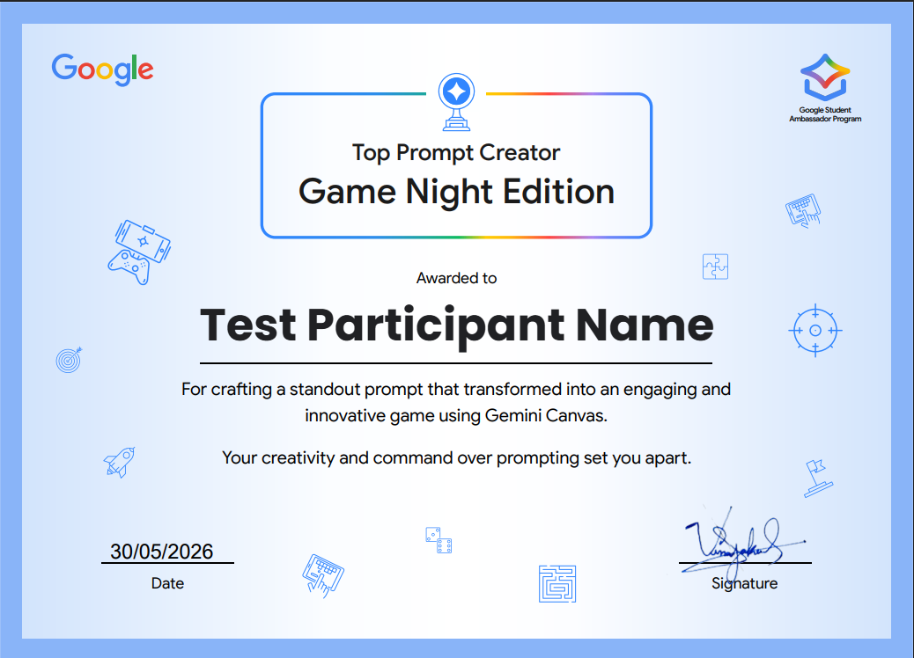
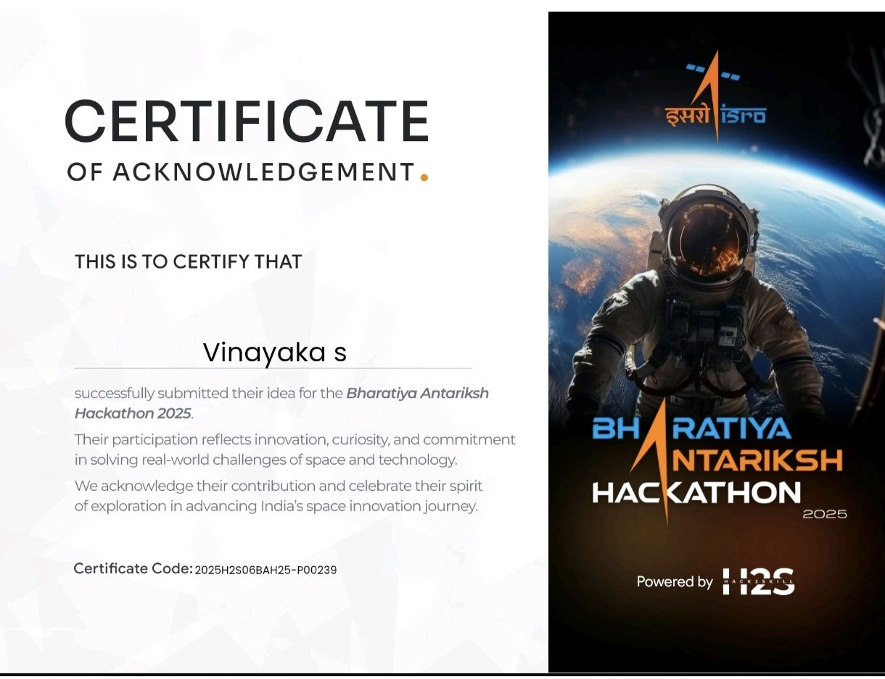
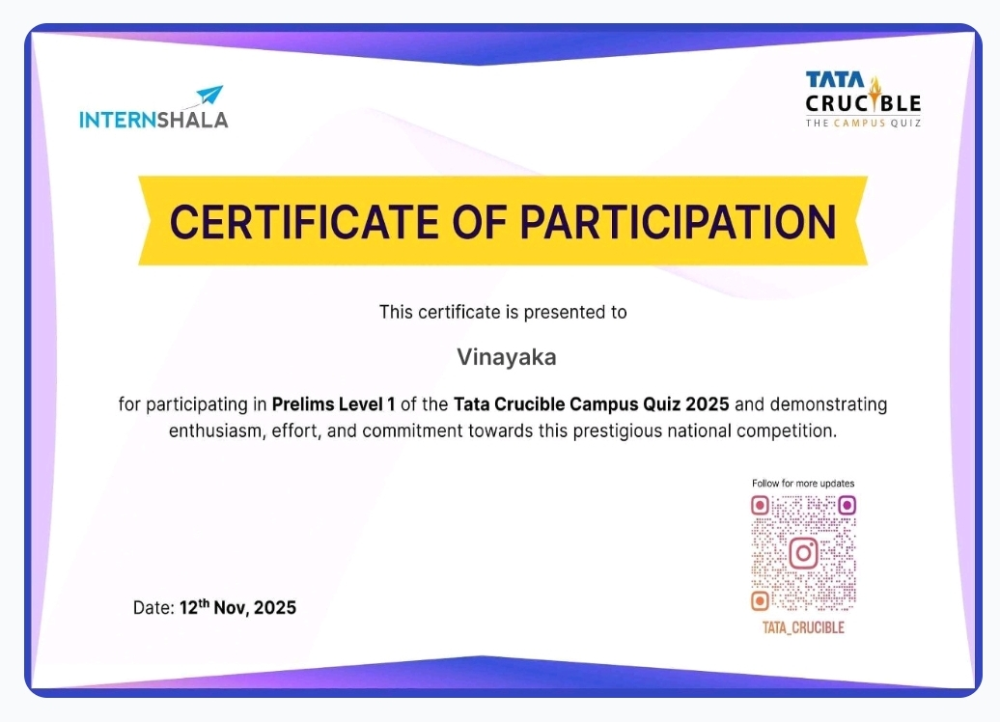
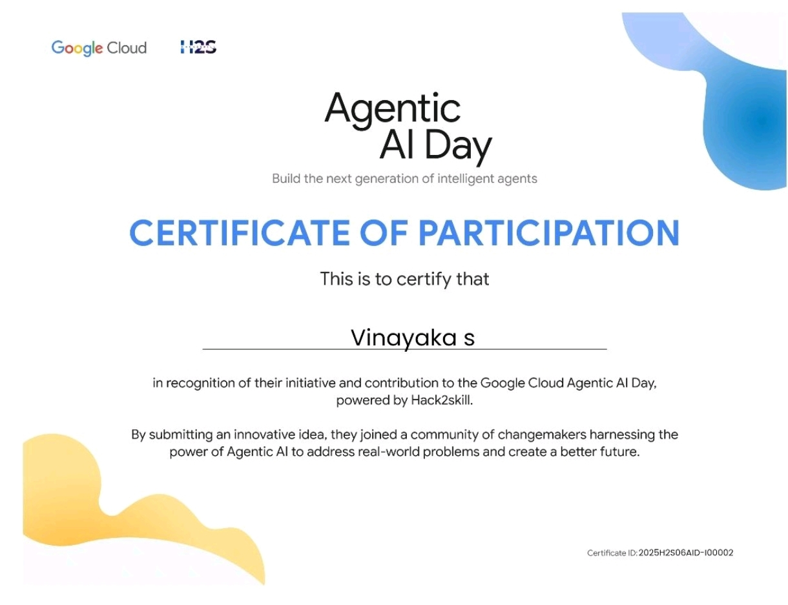

3rd-year B.E. AI/ML student at Global Academy of Technology, Bengaluru. My work spans computer vision, EEG-based brain-computer interfaces, embedded AI, and voice-driven desktop automation.
I've interned at Infosys Springboard and Pantech Solutions, delivered a research paper to IEEE InC4 2026, and participated in national competitions including ISRO Bharatiya Antariksh Hackathon and the Tata Crucible Campus Quiz.
My goal: build AI that matters — for defence, space research, and large-scale engineering challenges facing India.
Real projects across computer vision, signal processing, voice AI, embedded systems, and space-tech.
🧠
BCI / Signal
EEG Brain-Computer Interface
Secure AI-powered BCI decoding imagined speech from 64-channel EEG signals across 15 subjects — restoring communication for those with motor/vocal impairments.
61.6% accuracy · p < 0.0001 · IEEE InC4 2026
PythonCSPLinearSVCMNEStreamlitAES
View details →
🔍
Computer Vision
PCB Defect Detection — Infosys
End-to-end YOLOv8 defect detection pipeline for industrial PCB quality inspection with a real-time Streamlit dashboard — reducing manual inspection by ~40%.
96.5% accuracy · 10K images · ~40% effort saved
YOLOv8FastAPIStreamlitPyTorchOpenCV
View details →
🤖
Voice AI
Sanju — AI Desktop Assistant
Voice-activated AI assistant that writes code into Python files, opens apps, searches the browser, and holds persistent conversations — built entirely with free APIs.
Gemini API · PyQt6 · Real-time TTS · App Control
PythonGeminiPyQt6Edge TTSPyAutoGUI
View details →
🌙
Space Tech
Lunar Noise Cancellation — SIH
Image enhancement system for noise cancellation in dark lunar surface imagery — submitted for Smart India Hackathon to aid ISRO's lunar exploration data pipelines.
Smart India Hackathon · Deep Image Processing
PythonOpenCVCNNsNumPy
View details →
📐
Computer Vision
3D Body Measurement via CNN
Deep learning pipeline estimating human body measurements from a single 2D image using pose estimation CNNs — deployed as a FastAPI REST endpoint for retail.
Single-image 3D estimation · FastAPI deployed
CNNPose EstimationTensorFlowOpenCVFastAPI
View details →
📡
Embedded / IoT
V2V Collision Avoidance
Real-time vehicle-to-vehicle wireless safety framework using Python and ESP32/NRF24L01 hardware for autonomous collision alerts between distributed nodes.
Real-time · Sub-50ms latency · ESP32
PythonESP32NRF24L01Distributed
View details →
Technical skills
What I work with
Tools and technologies for building production-grade AI systems.
Languages
Python
JavaScript
Java
SQL
ML / DL
PyTorch
YOLOv8
TensorFlow
scikit-learn
Tools & Frameworks
OpenCV
FastAPI / Flask
Streamlit
Git
Embedded & APIs
ESP32
Gemini API
Edge AI
EEG / CSP
Career
Experience
Hands-on internships building real production-grade AI systems.
Research paper submitted to IEEE InC4 2026 · May 17, 2026
61.6%
Mean balanced accuracy
p<0.0001
Statistical significance
15
EEG subjects
64-ch
EEG channels
11%
Plagiarism score
Overview
Architected a secure, AI-powered Brain-Computer Interface that decodes imagined speech (Bilabial vs. Non-Bilabial phonemes) from 64-channel EEG signals across 15 subjects. The system targets assistive communication for individuals with severe motor or vocal impairments — translating silent thoughts into text without any physical movement.

🧠
eeg_pipeline.png
📊
eeg_csp.png
🖥️
eeg_dashboard.png
📈
eeg_accuracy.png
The ML pipeline
EEG Acquisition: 64-channel non-invasive cap at 256 Hz, 3.1s epochs per trial across 15 subjects.
CSP with OAS Regularization: Compressed 64 channels → 4 spatial components per band → 20D log-variance feature vectors.
LinearSVC Classifier: Zero-leakage StandardScaler + balanced class weights → 61.6% mean balanced accuracy (t=8.435, p<0.0001).
Security & dashboard
Integrated AES end-to-end encryption, user authentication, and complete subject anonymization. Real-time Streamlit simulation dashboard with live 8-channel EEG waveforms, pipeline stage tracker, log-variance bar charts, and an SVM decision-confidence dial.
Research impact
Officially submitted to IEEE InC4 2026 on May 17, 2026. DrillBit plagiarism score: 11% (Grade B — Upgrade).
Architected a full-stack defect detection system for industrial PCB quality inspection during a 3-month sprint at Infosys Springboard. Python OOP backend powered by YOLOv8 + FastAPI with a real-time Streamlit dashboard trained on 10,000+ PCB images — achieving 96.5% accuracy.
Built entirely with free APIs — Google Gemini, Edge TTS, Google Speech Recognition
Overview
Sanju is a fully local, voice-activated AI desktop assistant that can write Python code directly into open files, launch and control applications, search the web, and hold natural conversations with persistent memory across sessions.
▶
sanju_demo.mp4 — click to play
🎤
sanju_ui.png
💻
sanju_code.png
🌐
sanju_search.png
🧠
sanju_memory.png
Core capabilities
Code writing: Listens to instructions and types Python code directly into your open editor using PyAutoGUI clipboard injection.
App control: Opens Chrome, Spotify, VS Code, Discord, WhatsApp, File Explorer, and 20+ apps via voice commands.
Browser search: Interprets natural language queries and opens the browser — "Sanju, search for machine learning tutorials".
Persistent memory: All conversations saved to sanju_memory.json and injected into the next session across reboots.
Emotion detection: Detects emotional tone and switches animated GIF states on the transparent floating UI.
Technical architecture
AI engine: Google Gemini API (gemini-flash) with custom system prompt, streaming responses, and conversation history management.
Audio engine: PyAudio + SpeechRecognition for wake-word detection → Google STT → Edge TTS (Emma Neural voice).
UI: PyQt6 frameless, always-on-top, transparent window displaying animated GIFs per state (idle, listening, thinking, speaking).
App controller: PyAutoGUI + pygetwindow for window management; pyperclip for clipboard-based code injection.
Projects / Lunar Noise Cancellation
Lunar Dark Area Noise Cancellation System
PythonOpenCVCNNsNumPyImage Processing
Submitted for Smart India Hackathon (SIH) — ISRO lunar exploration data pipeline
Overview
Architected a deep image processing system for noise cancellation in dark lunar surface imagery — submitted for Smart India Hackathon to support ISRO's lunar exploration missions.
🌙
moon_raw.png
✨
moon_enhanced.png
🔬
moon_heatmap.png
📡
moon_pipeline.png
Problem statement
Lunar permanently shadowed regions near the poles may contain water ice — but standard cameras cannot capture detail in near-complete darkness. Images contain extreme noise, shadow artifacts, and low-SNR regions that block scientific analysis.
Adaptive enhancement: Detected dark zones automatically and applied stronger enhancement locally without overexposing illuminated areas.
CNN super-resolution: Lightweight CNN to upscale and sharpen recovered regions while suppressing sensor noise.
Relevance to ISRO
Directly addresses imaging challenges during Chandrayaan missions. Enhanced dark-area imagery improves crater mapping, ice detection, and safe landing zone identification for future lunar landers.
Projects / 3D Body Measurement
3D Body Measurement via CNN
PythonTensorFlowOpenCVFastAPIPose EstimationREST API
Overview
End-to-end deep learning pipeline estimating precise human body measurements from a single 2D image using pose estimation CNNs — packaged as a production-ready REST API for retail and fashion applications (virtual try-on, size recommendation).
🧍
body_pose.png
📐
body_output.png
⚡
body_api.png
👗
body_retail.png
Pipeline
Modular OOP pipeline stages for pose keypoint extraction, geometric feature computation, and regression model inference.
Deployed as a FastAPI REST endpoint enabling real-time inference integration for downstream retail applications.
Single-image inference — no depth sensor or multi-view camera required.
Projects / V2V Collision Avoidance
V2V Collision Avoidance System
PythonESP32NRF24L01Distributed Systems
Overview
Real-time vehicle-to-vehicle safety framework with a custom distributed communication protocol for autonomous collision avoidance alerts on ESP32/NRF24L01 hardware.
📡
v2v_hardware.png
🚗
v2v_simulation.png
Technical details
Custom wireless protocol on ESP32 + NRF24L01 for sub-50ms alert latency between vehicle nodes.
Fault-tolerant design with automatic retransmission and node dropout recovery.
Python-based simulation layer for protocol testing before hardware flashing.
Achievements / ISRO Hackathon
🛸
ISRO Bharatiya Antariksh Hackathon 2025
National Participant — Space-Tech Innovation

🛸
cert_isro.png
About
Selected as a national participant in the ISRO Bharatiya Antariksh Hackathon 2025 — one of India's most prestigious space-tech competitions. Submitted a space-tech innovation evaluated from thousands of entries across the country.
My contribution
Submitted the Lunar Dark Area Noise Cancellation project — addressing permanently shadowed regions on the Moon that contain potential water ice deposits.
Achievements / Tata Crucible
🏆
Tata Crucible Campus Quiz 2025
Qualified Prelims Level 1

🏆
cert_crucible.png
About
Qualified the Prelims Level 1 of the Tata Crucible Campus Quiz 2025 — India's largest national business and technology quiz competition.
Achievements / RBIH Ideathon
🏦
RBIH Financial Literacy Ideathon 2025
Top 200 / 7,000+ Applicants
🏦
cert_rbih.png
About
Shortlisted in the Top 200 out of 7,000+ applicants nationwide for the RBIH Financial Literacy Ideathon — focused on technology solutions to improve financial literacy across India.
Served on the Core Organising Committee for the 24th VTU Youth Fest 2025. Managed logistics and event coordination for an intercollegiate event attended by 5,000+ students.
Achievements / Google Cloud
☁️
Agentic AI Day Google Cloud
Participation Certificate

☁️
cert_googlecloud.png
About
Participated in Agentic AI Day organised by Google Cloud — focused on multi-agent architectures, autonomous reasoning pipelines, and production deployment of LLM-powered agents using Google Cloud infrastructure.
Key learnings
Agentic AI design patterns — planning, tool use, and memory in production systems.
Google Gemini API integration for intelligent agent workflows.
Multi-agent orchestration and safety considerations for autonomous AI.
Achievements / IEEE InC4 2026
📄
IEEE InC4 2026 Research Paper Submission
Submitted May 17, 2026
📄
cert_ieee.png
Paper details
Title: "Secure AI-Powered EEG-Based Brain-Computer Interface For Speech Imagery Communication"
Conference: 2026 IEEE International Conference on Contemporary Computing and Communications (InC4)
Submitted: May 17, 2026
Authors: Bhuvan A R, Chethan Ponnappa A, Vinayaka S · Global Academy of Technology, Bengaluru
Plagiarism score: 11% (DrillBit) — Grade B
Abstract
An EEG-based BCI classifying imagined speech using CSP spatial filtering, LinearSVC classification, and AES data security — achieving 61.6% mean balanced accuracy (p < 0.0001) across 15 subjects.